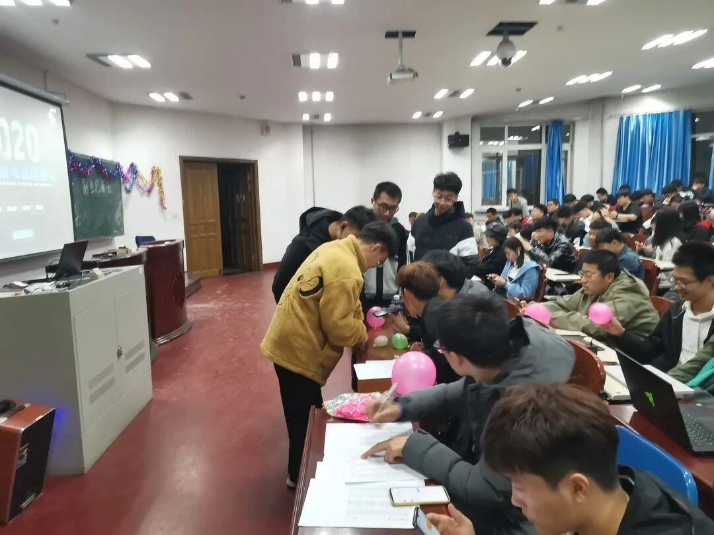
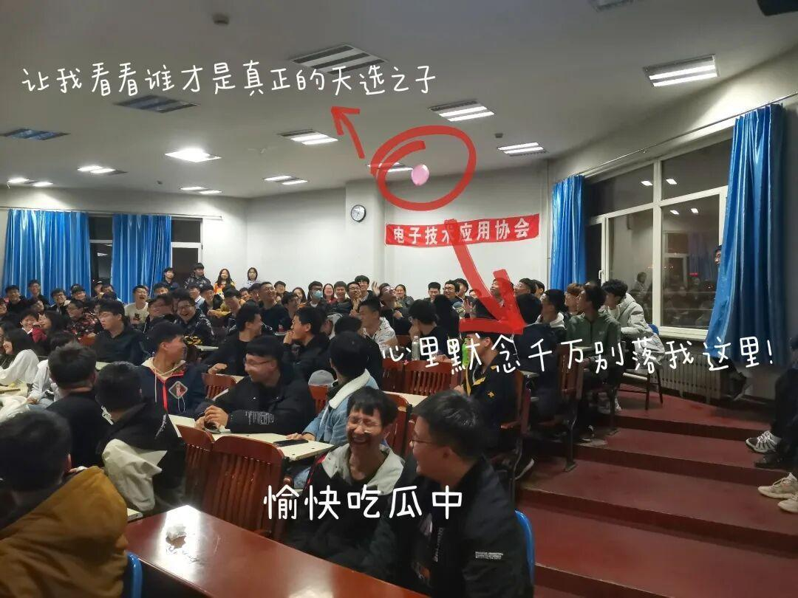
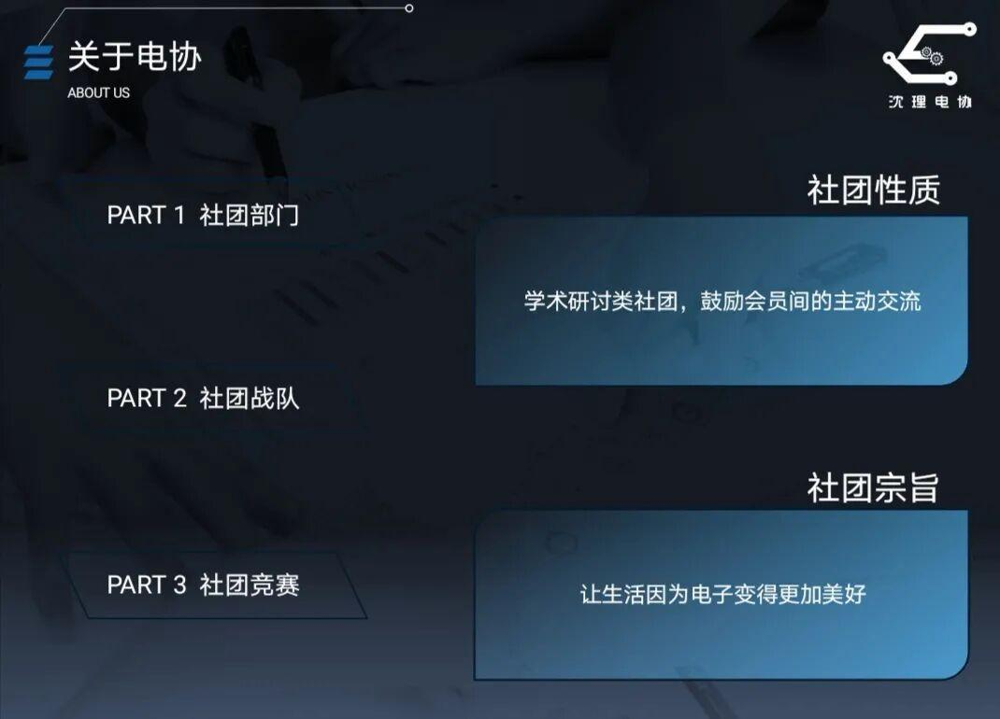
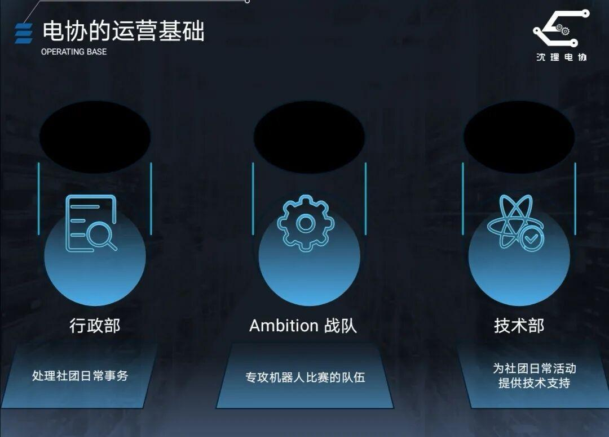
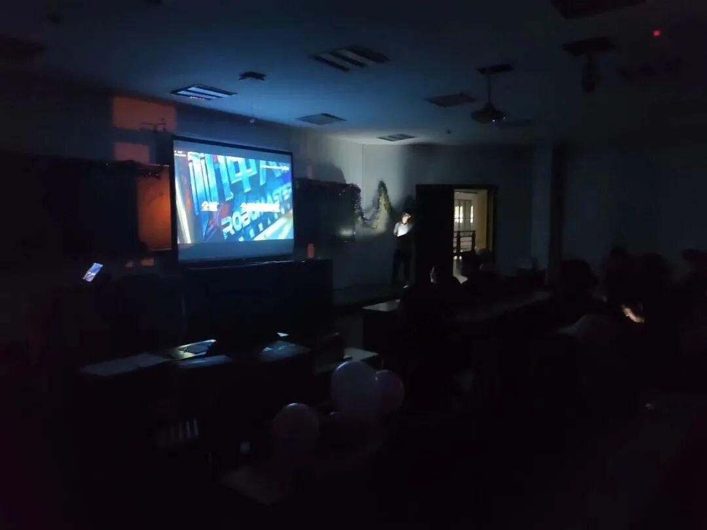
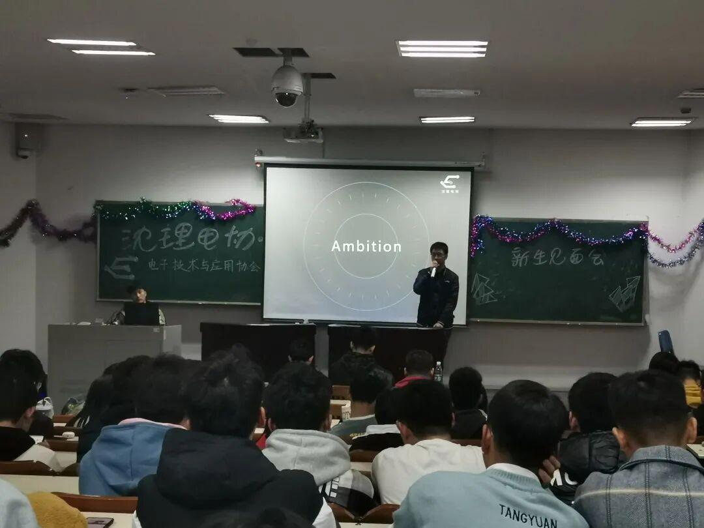
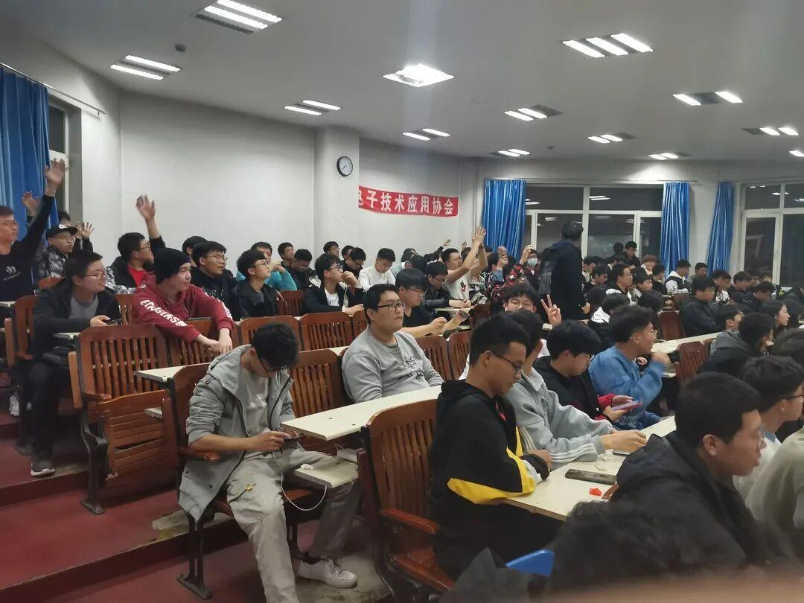
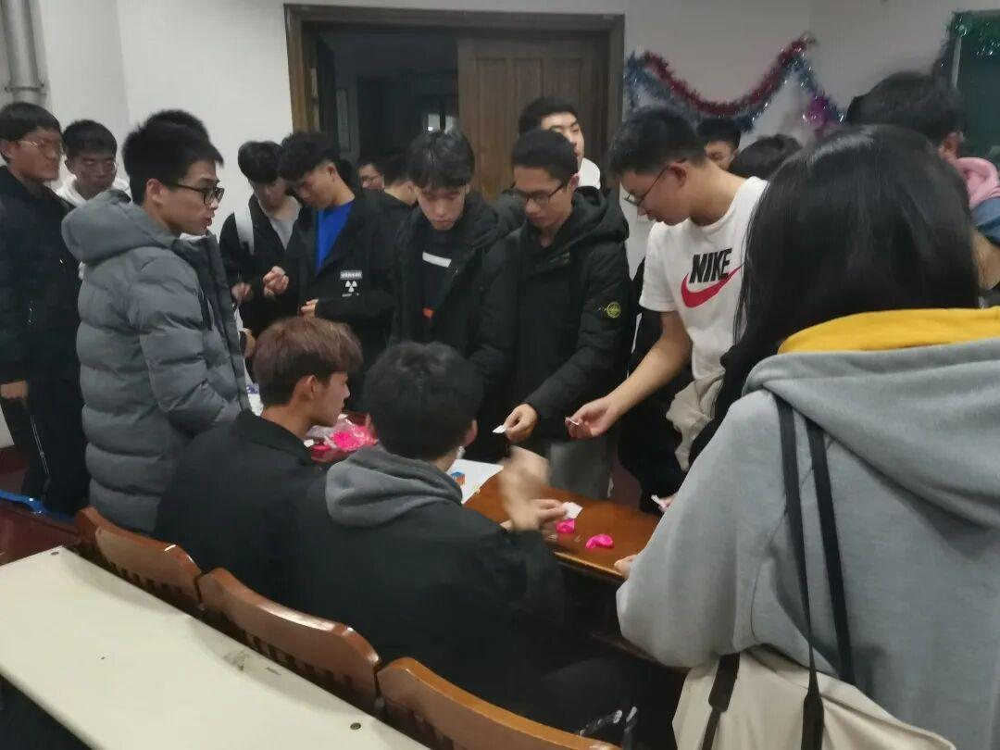
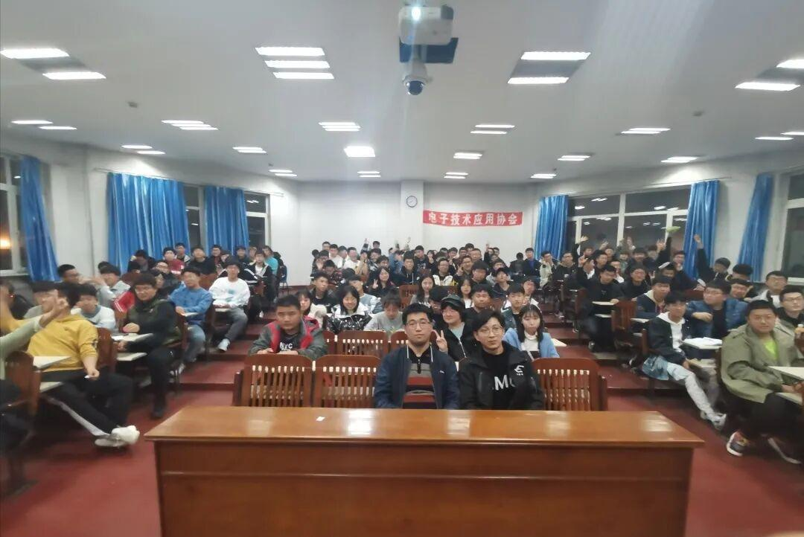
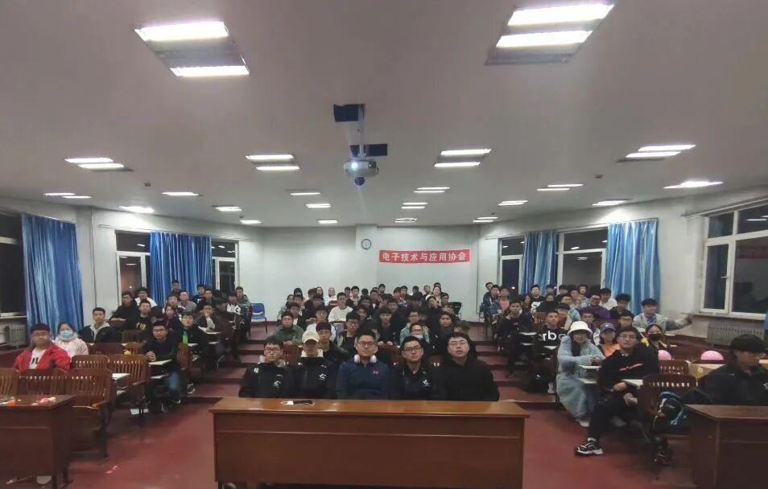

活动总结|新生见面会圆满结束啦~
New
新生见面会
昨天的见面会圆满结束啦
不知道大家与诸位学长学姐面基之后感觉如何
硬核的技术
炫酷的RM比赛
有趣的社团活动
沙雕与严肃并存的团队氛围
有没有哪一点戳到你呢？
什么？昨晚有事情没能到现场？
没关系，小编带你再来回顾一次！


本次见面会我们分两个教室进行，同学们在门口签到的同时还可以领取到一个小气球（小气球可是有秘密的哦！）

在正式开始会议之前，主持人小姐姐带领大家玩“击鼓传花”的小游戏，大家纷纷传这个“烫手山芋”的画面真是让人忍俊不禁！


接下来主持人详细介绍了关于电协的社团性质与运营基础，具体资料请点击下方蓝字链接查看往期推送哦！

这一part，主持人以三段热血有趣的视频开场，引出了我们的Ambition战队！！！

两个会场分别由现任会长陈泽天学长与Ambition战队队长苏伟鹏学长讲解了Ambition战队的基本简介、战队组成与在各种大赛中取得的成就。（具体详情请点击下方蓝字链接查看哦！）
在提问环节，同学们积极提问，对电协充满了好奇。会议的最后，有彩蛋哦！大家纷纷戳破气球凭借气球里面的小纸条去换取精美小奖品！


最后，奉上我们的大合照啦！


第一次见面
可能会有陌生和拘谨
但相信在不远的将来
有着共同兴趣的我们
将凝聚成一团炽热的火焰
燃烧共同的梦想
我们一起加油！

排版|辛学敏
文字|辛学敏
图片|信息部
关注我们，了解更多资讯~